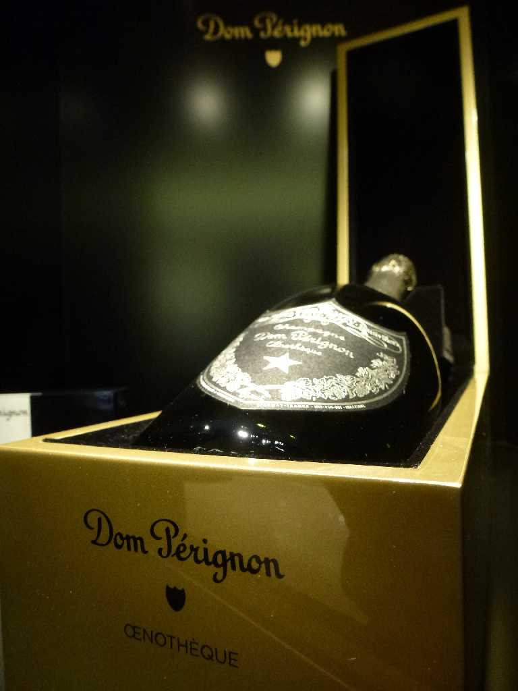
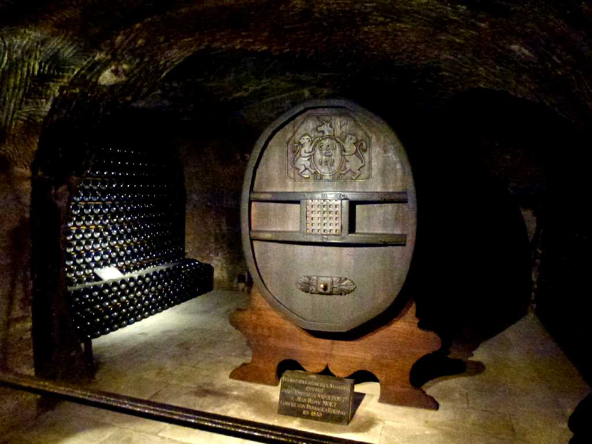
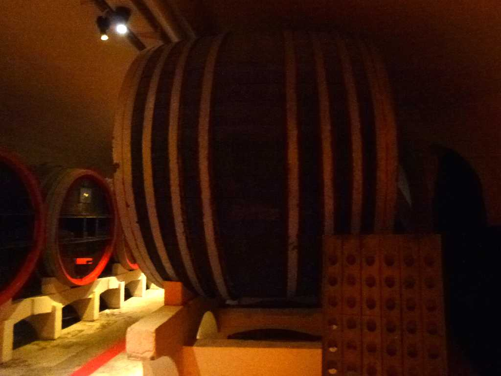
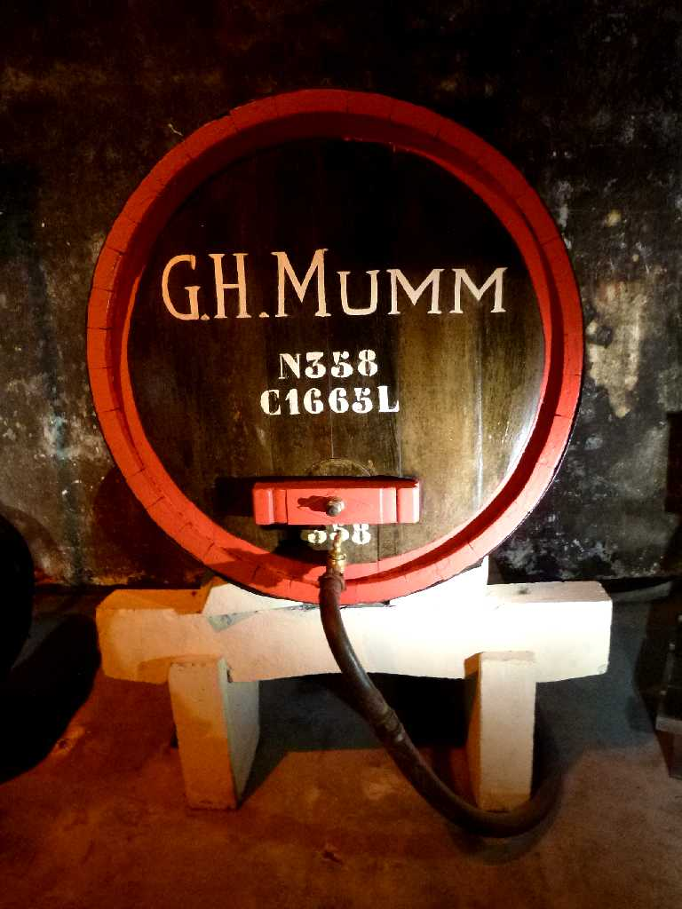
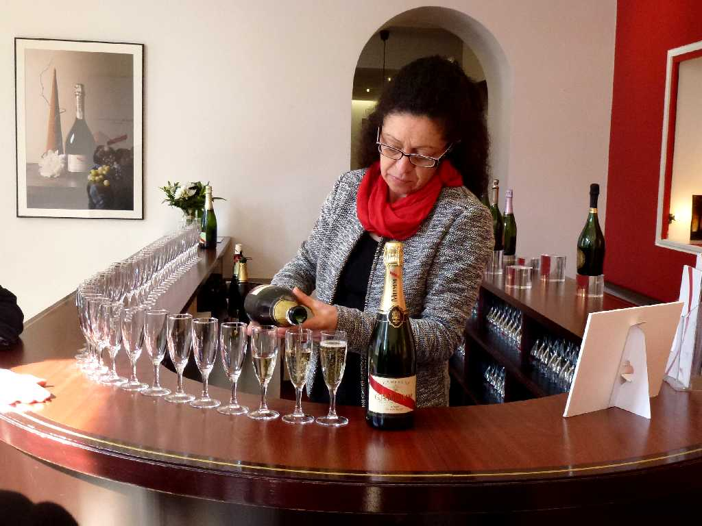
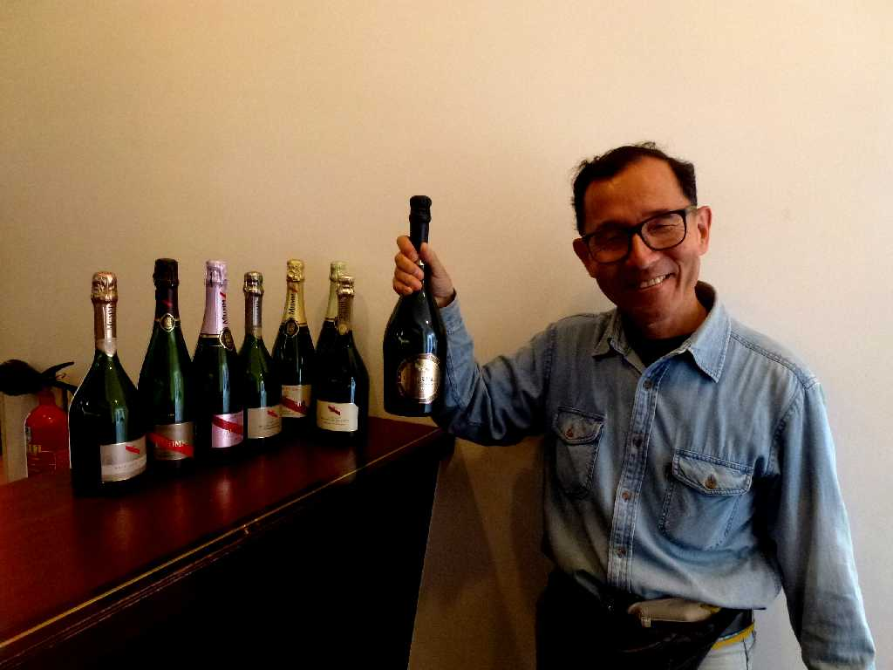

Dom Pérignon Moët & Chandon
フランスのシャンパーニュ地方て創られたスパークリングワインの高級シャンパンで発明したと云われるベネディクト会修道士ドン・ピエール・ペリニヨンから名付けられた通称ドンペリ

Moët et Chandon Cave à champagne
１７４３年創業のドンペリを醸造し1200haの自社ブドウ畑を持つモエ・エ・シヤンドンのセラーを訪れる

G.H.Mumm Cave à champagne
G.H.Mumm は１８２７年設立されランス郊外に330haのブドウ畑を持ち全長２５㎞の地下セラーを管理し２千５百万本のシャンパンを保管している醸造会社

G.H.Mumm Cave à champagne

Cave à champagne
フランスのシャンパーニュ地方て創られたスパークリングワインのシャンパーニュ醸造所で試飲

March 28 2014 Cave à champagne